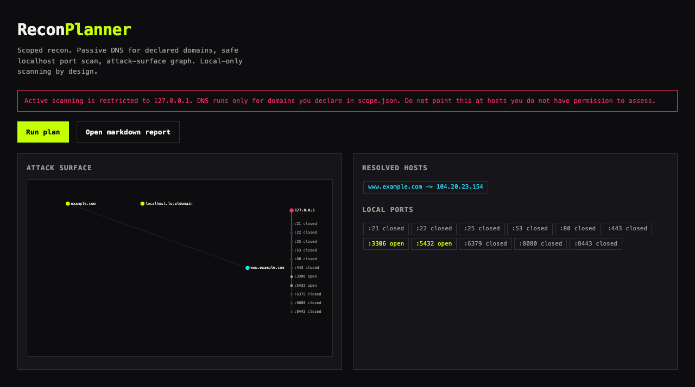

FILE / 04-RECON · scoped recon
ReconPlanner
Scoped recon and surface map
Before you touch anything, you map what is exposed. ReconPlanner declares a scope, scans locally and safely, and renders every surface as a node on a graph. Click a node to read what was found. Nothing leaves the machine.
"We mapped the blast radius before we touched a single service."Safe local scan
LIVE APP

ReconPlanner mapping declared scope with safe local scanning.
SURFACE MAP · click a node to inspect
Click a surface to inspect.